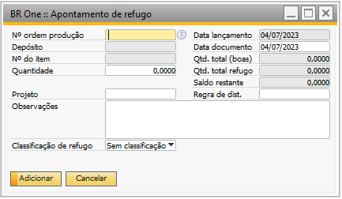
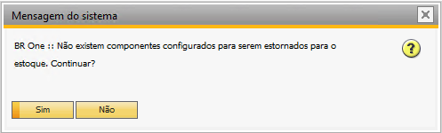
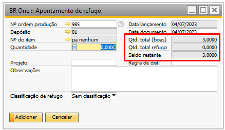
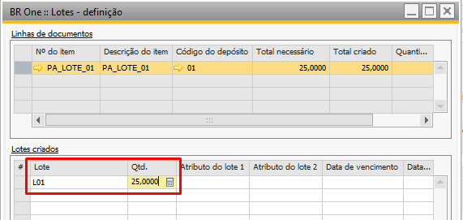
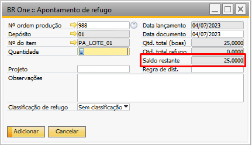
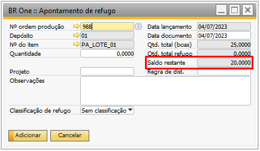

Apontamento de Refugo
Para realização do apontamento de refugo, é necessário ter autorização de Apontamento de refugo, assim apenas os usuários com permissão conseguiram cadastrar esse apontamento, para impedir usuários não autorizados a realizarem o processo.
Quando um usuário sem autorização tentar abrir a tela “BR One :: Apontamento de refugo” ou estornar um apontamento, a seguinte mensagem será exibida:

BR One :: Usuário sem permissão para executar esta ação
Para acessar a tela “BR One :: Apontamento de Refugo” é necessário ir no menu:
Produção -> Apontamento de Refugo
Assim como na tela “BR One :: Entrada de produto acabado”, deve ser informado o “Nº ordem produção” e a “Quantidade” a ser apontada.
Validações da tela:
Os campos “Nº ordem produção”, “Quantidade” e “Classificação de refugo” são obrigatórios;
A quantidade informada não poderá ser igual ou menor que 0;
A quantidade não pode ser maior que o campo “Total apontado”;
Caso caia em alguma validação acima, a mensagem referente à validação será exibida:

BR One :: Informe uma ordem de produção.

BR One :: Informe uma quantidade maior que zero.

BR One :: Informe uma quantidade menor ou igual que a quantidade disponível: 2,5
Apenas estarão disponíveis para seleção as OPs que estiverem liberadas e que tenham entrada de produto acabado realizada. No campo “Classificação de refugo” serão exibidos os refugos cadastrados na tela “BR One :: Classificação de refugo”.
Para itens administrados por lote em OPs de Retrabalho, é necessário definir manualmente o lote que será utilizado no processo. Para isso, deve-se apertar o botões “CTRL+TAB” quando o campo de quantidade estiver selecionado, dessa forma a tela de seleção de lote será exibida e o usuário poderá definir o lote que utilizará no processo.
Após preencher todos os campos necessários e clicar em Adicionar. Caso o apontamento seja inserido com sucesso, as seguintes mensagens serão exibidas:

BR One :: Aguarde…

BR One :: Operação realizada com sucesso.
Para determinar quais componentes da OP participarão do processo de entrada por explosão, foi criada a flag “Estornar item no apontamento de refugo” que se encontra na aba “Estoque” do cadastro do item (Estoque > Dados do cadastro do item).

Caso ao realizar o apontamento de refugo nenhum componente da OP esteja com esse flag marcado, a seguinte mensagem será exibida:
BR One :: Não existem componentes configurados para serem estornados para o estoque. Continuar?
Caso seja clicado em “Sim”, será feita a saída para o item pai e nenhuma entrada para os componentes.

Se for clicado em “Não”, o apontamento de refugo não será realizado, dando oportunidade para o usuário configurar os componentes.
Ao clicar em “Não”, a seguinte mensagem será exibida:
BR One :: Erro ao gerar estorno para o item x. Ação foi cancelada pelo usuário.
Ao inserir o apontamento, será feita uma saída de mercadorias do item pai da OP (estornando a entrada de PA) e uma entrada de mercadoria com os componentes que tenham a flag “Estornar item no apontamento de refugo” marcada e que o método de baixa seja “Baixa por explosão” (reinserindo no estoque a baixa por explosão).
Exemplo:
A OP tem uma quantidade planejada de 8 peças, onde foi realizado uma entrada de PA de 3 itens do item pai “pa nenhum” e uma baixa por explosão de 3 itens do componente “item_nenhum_01”.


Na tela de aportamento de refugo, ao selecionar a OP, os campos “Qtde. total (boas)”, “Qtde. total refugo” e “Saldo restante” serão carregados:
O campo “Qtde. total (boas)” é a soma dos itens apontados como produto acabado (peças boas), ou seja, o total de entradas de PA realizadas para a OP.
O campo “Qtde. total refugo” é a quantidade já apontada como refugo.
O campo “Saldo restante” é a quantidade que ainda pode ser apontada como refugo, ou seja, “Qtde. total (boas) - Qtde. total refugo”.
Utilizando a imagem acima como exemplo, foi realizada uma entrada de PA de 3, um apontamento de refugo de 0 e o saldo restante de 3 (3 - 0).
Como exemplo de apontamento, será feito um apontamento de 1. Ao adicionar o apontamento, será feito o estorno da entrada de PA (saída de mercadorias) e uma entrada do componente que teve baixa por explosão.

Obs.: Neste exemplo, caso o componente “item_nenhum” estivesse com o flag “Estornar item no apontamento de refugo” desmarcado, não seria realizado o lançamento da entrada de mercadoria nº 1308 da imagem acima.
Ao realizar o apontamento de refugo para itens do cabeçalho da OP que sejam de lote (saída), se houver apenas 1 lote para o item, será feito o refugo sem precisar selecionar o lote.
Caso o item tenha mais de 1 lote, a tela de seleção de lote será aberta. Se for para componentes da OP que sejam de lote (entrada), a escolha do lote será feita pela ordem “Último que saiu é o primeiro a entrar” (essa regra vale apenas para saídas com vínculo com a OP utilizada).
Ao realizar o apontamento de refugo será considerado o saldo do lote que tiver sido feito entrada de PA e não o saldo total do item.
Exemplo:
A ordem de produção 988 tem como item pai o “PA_LOTE_01” com quantidade planejada de 50 peças, onde ele não possui nenhuma peça em estoque.


Ao realizar a entrada de PA de 25 peças, será criado o número de lote L01.
E ao carregar a OP no apontamento de refugo, o saldo restante será a quantidade que foi entrada no processo de entrada de PA, ou seja, 25 peças.
Mas, se por acaso essa quantidade for transferida ou utilizada em outro processo, o saldo restante do refugo será a quantidade em estoque referente ao número de lote L01. No exemplo, será realizada uma transferência de estoque do 01 para o 01-DP02 de 5 peças.

Então, ao carregar a OP novamente na tela “BR One :: Apontamento de refugo”, o saldo restante será de 20 peças, pois ele considera o estoque do lote.
Se houvesse uma entrada para um lote x de 100 unidades para esse item, ainda estaria disponível apenas 20, pois o lote L01 possui apenas 20.
O saldo restante apenas será alterado caso haja uma entrada para o lote L01.
Ao apontarmos um refugo de 10 peças na OP 988, a aba custos será atualizada. No campo “Quantidade refugo” da OP estará a quantidade apontada como refugo, podendo consultar os detalhes através do botão […].


No campo detalhes dos custos de componentes e custo atual do PA também será possível visualizar o apontamento: